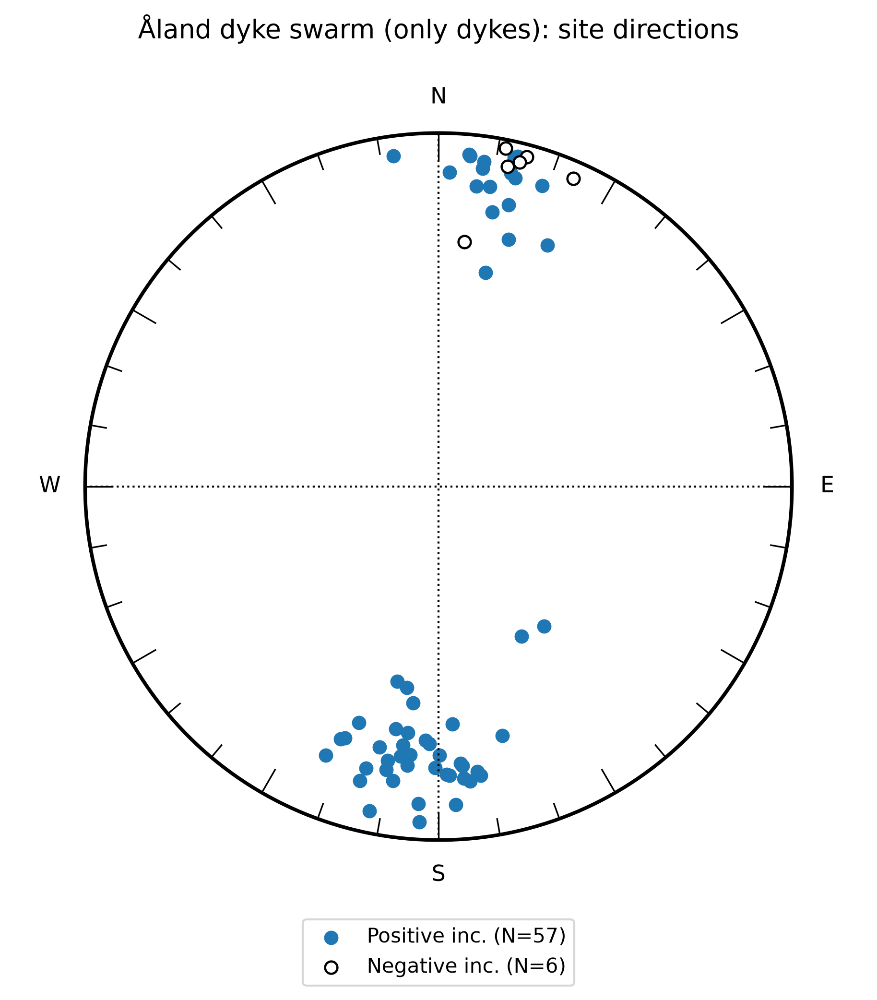
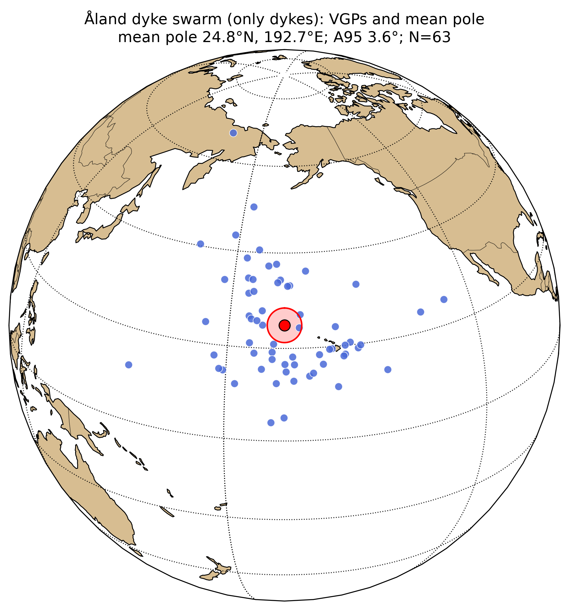
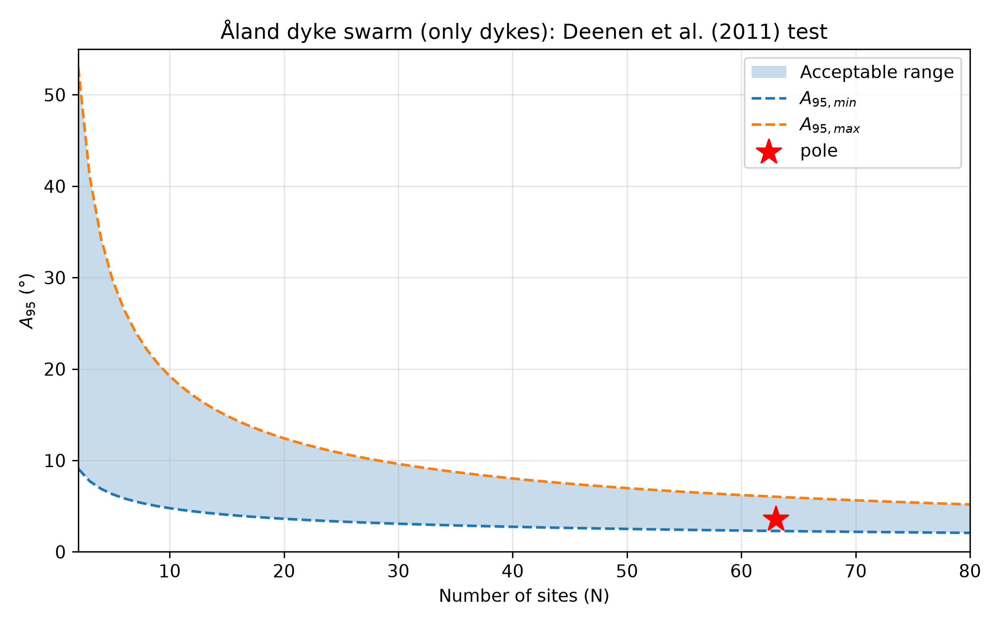

Baltica Precambrian pole assessment prototype
Calculations checked, numbers changed slightly.
| site | dir_dec | dir_inc | dir_k | dir_alpha95 | dir_n_samples | vgp_lat | vgp_lon |
|---|---|---|---|---|---|---|---|
| A01 | 11.1 | 22 | 25 | 25.2 | 3 | 40.6 | 185.9 |
| A09 | 352.2 | 6.2 | 1 | 32.4 | 210.6 | ||
| A11 | 7.9 | 10 | 1 | 34.3 | 191.7 | ||
| A13 | 15 | -3.9 | 45.1 | 11.5 | 5 | 26.6 | 184.5 |
| FG | 15.8 | 28.2 | 2 | 43.4 | 178.6 | ||
| FO | 12.2 | -8.1 | 2 | 24.8 | 187.7 | ||
| FT | 9.7 | 15 | 114.6 | 3.3 | 46 | 37.2 | 188.6 |
| FT | 5.5 | 6.8 | 16.1 | 17.2 | 11 | 33.1 | 194 |
| JC | 13.5 | 4.5 | 58.3 | 6.8 | 26 | 31.3 | 184 |
| NB | 24.3 | 26 | 71.4 | 14.7 | 5 | 40.4 | 169.1 |
| A23 | 12.4 | 38 | 273 | 5.6 | 4 | 50 | 182.8 |
| JC | 7.2 | 15.4 | 33.9 | 13.3 | 13 | 37.6 | 190.6 |
| JD | 23.6 | -5.5 | 107 | 8.9 | 4 | 24.5 | 174.4 |
| RC | 5.3 | 6.4 | 83 | 10.1 | 7 | 33 | 193.5 |
| Bergskär | 8 | 8 | 2 | 33.7 | 191 | ||
| Bergskär | 14 | 19 | 9.9 | 7 | 38.7 | 182.8 | |
| Föglö/Källsholm | 14 | 11 | 1 | 7 | 34.5 | 183.6 | |
| Kråkskärsharun | 14 | -6 | 5.7 | 7 | 26 | 185 | |
| Vestrafjärdsharun | 13 | 10 | 7 | 34.2 | 184.8 | ||
| Vidkobb | 19 | 11 | 7 | 33.7 | 177.6 | ||
| Vidskär N | 2 | 12 | 7 | 36.1 | 198.1 | ||
| Vidskär S | 13 | 5 | 7 | 31.7 | 185.2 | ||
| Tvidolskär | 6 | -31 | 7 | 13.1 | 194.7 | ||
| Föglö and Sottunga dykes | 11.2 | -2.8 | 29 | 12.7 | 25 | 27.8 | 187.5 |
| A02 | 177.8 | 19.3 | 22.8 | 16.4 | 5 | 19.6 | 203.3 |
| A03 | 176.9 | 10.8 | 28.5 | 10.6 | 8 | 24.1 | 204.4 |
| A04 | 186.4 | 21.7 | 14.6 | 24.9 | 4 | 18.2 | 194.5 |
| A05 | 165.6 | 28.1 | 2 | 13.8 | 215.4 | ||
| A06 | 172.2 | 19.7 | 17.9 | 30 | 3 | 19.2 | 209.2 |
| A07 | 178.4 | 19.6 | 271.2 | 7.5 | 3 | 19.5 | 202.7 |
| A08 | 182.9 | 28.9 | 34.7 | 2.1 | 3 | 14.1 | 198.1 |
| A22 | 194.4 | 18.9 | 1 | 18.9 | 186 | ||
| A14 | 179.8 | 25 | 64.8 | 7.6 | 7 | 16.5 | 201.2 |
| A15 | 173.9 | 17.3 | 251 | 3.8 | 7 | 20.6 | 207.5 |
| A16 | 175.1 | 21.8 | 63.1 | 7.7 | 7 | 18.2 | 206.2 |
| A17 | 175 | 18.3 | 118.1 | 6.2 | 6 | 20.1 | 206.3 |
| A18 | 175.4 | 22.5 | 97.4 | 6.1 | 7 | 17.9 | 205.8 |
| A19 | 171.7 | 18.6 | 2 | 19.8 | 209.8 | ||
| A20 | 180.7 | 21.5 | 56.2 | 8.1 | 7 | 18.5 | 200.4 |
| A21 | 176.7 | 33.2 | 71.1 | 9.1 | 5 | 11.5 | 204.3 |
| CG | 200.4 | 25.1 | 3 | 14.9 | 179.3 | ||
| DE | 186 | 24.7 | 46.1 | 9 | 10 | 16.6 | 194.9 |
| EK | 187.1 | 30.5 | 5 | 12.2 | 157.4 | ||
| FM | 202.8 | 18.7 | 118.6 | 4.7 | 30 | 17.8 | 177.1 |
| KB | 183.3 | 5.6 | 12.5 | 22.5 | 5 | 27 | 196.4 |
| KW | 183.6 | 11 | 166.3 | 4.7 | 13 | 24.3 | 196.1 |
| LU | 190.5 | 19.6 | 67.5 | 9.4 | 11 | 19.2 | 190 |
| RK/RM | 187.8 | 27.1 | 27.6 | 9.4 | 18 | 15.1 | 193.1 |
| RK/RM | 190.5 | 22.2 | 92.1 | 3.2 | 54 | 17.7 | 190 |
| VS | 188.8 | 16.9 | 41.6 | 19.4 | 12 | 20.9 | 190.3 |
| VS | 192 | 6.9 | 55.1 | 8.2 | 26 | 25.7 | 186.3 |
| VT | 186.7 | 38.3 | 5 | 67.5 | 163.6 | ||
| CG | 201.2 | 24.4 | 5 | 15.1 | 178.4 | ||
| Kumlinge | 192 | 43 | 2 | 4.1 | 189.9 | ||
| Brändö | 192.8 | 25.4 | 29 | 17.3 | 8 | 15.6 | 187.7 |
| Korsö | 188 | 24 | 2 | 16.7 | 192.8 | ||
| Korsö | 182 | 28 | 2 | 14.7 | 199 | ||
| NE of Slätskär | 195 | 15 | 2.5 | 7 | 21 | 184.9 | |
| E of Slätskär | 190 | 31 | 8.8 | 6 | 12.6 | 191 | |
| E of Slätskär | 189 | 42 | 2 | 2 | 5.2 | 192.6 | |
| SW of Slätskär | 151 | 50 | 13.6 | 3 | 24.1 | 225.5 | |
| Kumlinge NE | 143 | 49 | 8.5 | 6 | 25.2 | 232.4 | |
| Kumlinge-Brändö | 198.6 | 30.2 | 60 | 7.9 | 25 | 12.2 | 182 |
Source workbook: data/site_level_data_site_comments_added.xlsx;
sheet: Åland dyke swarm (only dykes).
This table is regenerated automatically from the workbook.
Tilt-corrected site directions for Åland dyke swarm (only dykes). Filled and open symbols distinguish positive and negative inclinations. This plot shows the scatter of individual site directions behind the mean pole.

Site-level VGPs are plotted on an orthographic globe together with the Fisher mean pole and its circular A95 confidence region. This is the Laurentia-style view needed to inspect the spatial scatter of the site poles.

The Deenen et al. (2011) diagnostic compares the pole A95 with the expected range for the number of site-level VGPs. This provides a first-order PSV-style check.

Matched site-level sheet: Åland dyke swarm (only dykes)
| site | dir_dec | dir_inc | dir_k | dir_alpha95 | dir_n_samples | vgp_lat | vgp_lon |
|---|---|---|---|---|---|---|---|
| A01 | 11.1 | 22.0 | 25.0 | 25.2 | 3 | 40.6 | 185.9 |
| A09 | 352.2 | 6.2 | 1 | 32.4 | 210.6 | ||
| A11 | 7.9 | 10.0 | 1 | 34.3 | 191.7 | ||
| A13 | 15.0 | -3.9 | 45.1 | 11.5 | 5 | 26.6 | 184.5 |
| FG | 15.8 | 28.2 | 2 | 43.4 | 178.6 | ||
| FO | 12.2 | -8.1 | 2 | 24.8 | 187.7 | ||
| FT | 9.7 | 15.0 | 114.6 | 3.3 | 46 | 37.2 | 188.6 |
| FT | 5.5 | 6.8 | 16.1 | 17.2 | 11 | 33.1 | 194.0 |
| JC | 13.5 | 4.5 | 58.3 | 6.8 | 26 | 31.3 | 184.0 |
| NB | 24.3 | 26.0 | 71.4 | 14.7 | 5 | 40.4 | 169.1 |
| A23 | 12.4 | 38.0 | 273.0 | 5.6 | 4 | 50.0 | 182.8 |
| JC | 7.2 | 15.4 | 33.9 | 13.3 | 13 | 37.6 | 190.6 |
| JD | 23.6 | -5.5 | 107.0 | 8.9 | 4 | 24.5 | 174.4 |
| RC | 5.3 | 6.4 | 83.0 | 10.1 | 7 | 33.0 | 193.5 |
| Bergskär | 8.0 | 8.0 | 2 | 33.7 | 191.0 | ||
| Bergskär | 14.0 | 19.0 | 9.9 | 7 | 38.7 | 182.8 | |
| Föglö/Källsholm | 14.0 | 11.0 | 1.0 | 7 | 34.5 | 183.6 | |
| Kråkskärsharun | 14.0 | -6.0 | 5.7 | 7 | 26.0 | 185.0 | |
| Vestrafjärdsharun | 13.0 | 10.0 | 7 | 34.2 | 184.8 | ||
| Vidkobb | 19.0 | 11.0 | 7 | 33.7 | 177.6 | ||
| Vidskär N | 2.0 | 12.0 | 7 | 36.1 | 198.1 | ||
| Vidskär S | 13.0 | 5.0 | 7 | 31.7 | 185.2 | ||
| Tvidolskär | 6.0 | -31.0 | 7 | 13.1 | 194.7 | ||
| Föglö and Sottunga dykes | 11.2 | -2.8 | 29.0 | 12.7 | 25 | 27.8 | 187.5 |
| A02 | 177.8 | 19.3 | 22.8 | 16.4 | 5 | 19.6 | 203.3 |
| A03 | 176.9 | 10.8 | 28.5 | 10.6 | 8 | 24.1 | 204.4 |
| A04 | 186.4 | 21.7 | 14.6 | 24.9 | 4 | 18.2 | 194.5 |
| A05 | 165.6 | 28.1 | 2 | 13.8 | 215.4 | ||
| A06 | 172.2 | 19.7 | 17.9 | 30.0 | 3 | 19.2 | 209.2 |
| A07 | 178.4 | 19.6 | 271.2 | 7.5 | 3 | 19.5 | 202.7 |
| A08 | 182.9 | 28.9 | 34.7 | 2.1 | 3 | 14.1 | 198.1 |
| A22 | 194.4 | 18.9 | 1 | 18.9 | 186.0 | ||
| A14 | 179.8 | 25.0 | 64.8 | 7.6 | 7 | 16.5 | 201.2 |
| A15 | 173.9 | 17.3 | 251.0 | 3.8 | 7 | 20.6 | 207.5 |
| A16 | 175.1 | 21.8 | 63.1 | 7.7 | 7 | 18.2 | 206.2 |
| A17 | 175.0 | 18.3 | 118.1 | 6.2 | 6 | 20.1 | 206.3 |
| A18 | 175.4 | 22.5 | 97.4 | 6.1 | 7 | 17.9 | 205.8 |
| A19 | 171.7 | 18.6 | 2 | 19.8 | 209.8 | ||
| A20 | 180.7 | 21.5 | 56.2 | 8.1 | 7 | 18.5 | 200.4 |
| A21 | 176.7 | 33.2 | 71.1 | 9.1 | 5 | 11.5 | 204.3 |
| CG | 200.4 | 25.1 | 3 | 14.9 | 179.3 | ||
| DE | 186.0 | 24.7 | 46.1 | 9.0 | 10 | 16.6 | 194.9 |
| EK | 187.1 | 30.5 | 5 | 12.2 | 157.4 | ||
| FM | 202.8 | 18.7 | 118.6 | 4.7 | 30 | 17.8 | 177.1 |
| KB | 183.3 | 5.6 | 12.5 | 22.5 | 5 | 27.0 | 196.4 |
| KW | 183.6 | 11.0 | 166.3 | 4.7 | 13 | 24.3 | 196.1 |
| LU | 190.5 | 19.6 | 67.5 | 9.4 | 11 | 19.2 | 190.0 |
| RK/RM | 187.8 | 27.1 | 27.6 | 9.4 | 18 | 15.1 | 193.1 |
| RK/RM | 190.5 | 22.2 | 92.1 | 3.2 | 54 | 17.7 | 190.0 |
| VS | 188.8 | 16.9 | 41.6 | 19.4 | 12 | 20.9 | 190.3 |
| VS | 192.0 | 6.9 | 55.1 | 8.2 | 26 | 25.7 | 186.3 |
| VT | 186.7 | 38.3 | 5 | 67.5 | 163.6 | ||
| CG | 201.2 | 24.4 | 5 | 15.1 | 178.4 | ||
| Kumlinge | 192.0 | 43.0 | 2 | 4.1 | 189.9 | ||
| Brändö | 192.8 | 25.4 | 29.0 | 17.3 | 8 | 15.6 | 187.7 |
| Korsö | 188.0 | 24.0 | 2 | 16.7 | 192.8 | ||
| Korsö | 182.0 | 28.0 | 2 | 14.7 | 199.0 | ||
| NE of Slätskär | 195.0 | 15.0 | 2.5 | 7 | 21.0 | 184.9 | |
| E of Slätskär | 190.0 | 31.0 | 8.8 | 6 | 12.6 | 191.0 | |
| E of Slätskär | 189.0 | 42.0 | 2.0 | 2 | 5.2 | 192.6 | |
| SW of Slätskär | 151.0 | 50.0 | 13.6 | 3 | 24.1 | 225.5 | |
| Kumlinge NE | 143.0 | 49.0 | 8.5 | 6 | 25.2 | 232.4 | |
| Kumlinge-Brändö | 198.6 | 30.2 | 60.0 | 7.9 | 25 | 12.2 | 182.0 |